Laravel Relationship: One-to-Many & Many-to-Many pada Sistem Akademik.
Laravel
Website Profile Menjadi PWA
Website bisa diinstall seperti aplikasi.
Web
Aplikasi Pemesanan Perumahan
Booking rumah dengan Java Swing.
App
Aplikasi Laundry
Sistem manajemen laundry.
App
Konverter Satuan
Konversi berbagai satuan (Java).
Other
Detail Dokumen: Laporan Praktikum 6
Laporan Praktikum Pemrograman Web
Instalasi Laravel
Oleh:
AHMAD RAKA ALKINDI
NIM. 2411533017
Dosen Pengampu:
NURFIAH, S.ST, M.Kom.
Mata Kuliah:
PEMROGRAMAN WEB
Program Studi S1 Informatika Fakultas Teknologi Informasi Universitas Andalas Padang
A. Pendahuluan
Praktikum ini akan berfokus pada bagaimana cara memasang laravel pada perangkat masing masing. Laravel digunakan karena laravel merupakan suatu framework PHP yang populer. Laravel ini dikembangkan oleh taylor otwell. Laravel
merupakan proyek open source untuk mengembangkan aplikasi berbasis web dengan arsitektur MVC atau model view controller. Fitur utamanya meliputi:
a. Eloquent ORM
Memudahkan interaksi database menggunakan sintaks PHP intuitif.
b. Blade Template
Sistem manajemen template layout HTML bersih dan dinamis.
c. Artisan Console
Command line interface untuk mempercepat pembuatan modul controller & model.
d. Routing
Sistem mapping URL request yang fleksibel.
B. Tujuan
Tujuan dari praktikum ini adalah agar mahasiswa mampu melakukan instalasi laravel, membuat project baru pada laravel, mengenal struktur laravel, dan memahami konsep mvc laravel.
C. Isi & Langkah Kerja
Langkah pertama yang dilakukan yaitu kita harus mendownload atau menginstal composer terlebih dahulu. Composer merupakan dependensi manajer untuk PHP. Untuk mengecek kelayakan status instalasi, jalankan perintah
composer di cmd:
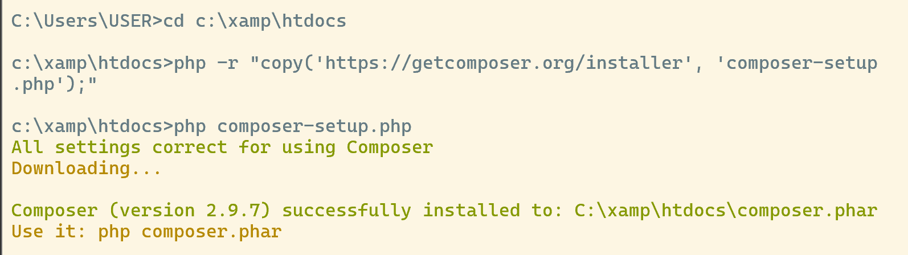
Gambar 1: Eksekusi Perintah Cek Composer.
Gambar 2: Output Kelayakan Berhasil.
Selanjutnya jalankan perintah pembentukan repositori aplikasi web baru: composer create-project laravel/laravel example-app. Pastikan path CMD berada di dalam area folder root htdocs XAMPP. Jangan lupa
konfigurasikan library penunjang aset Javascript dengan perintah npm install lalu dilanjutkan npm run dev.
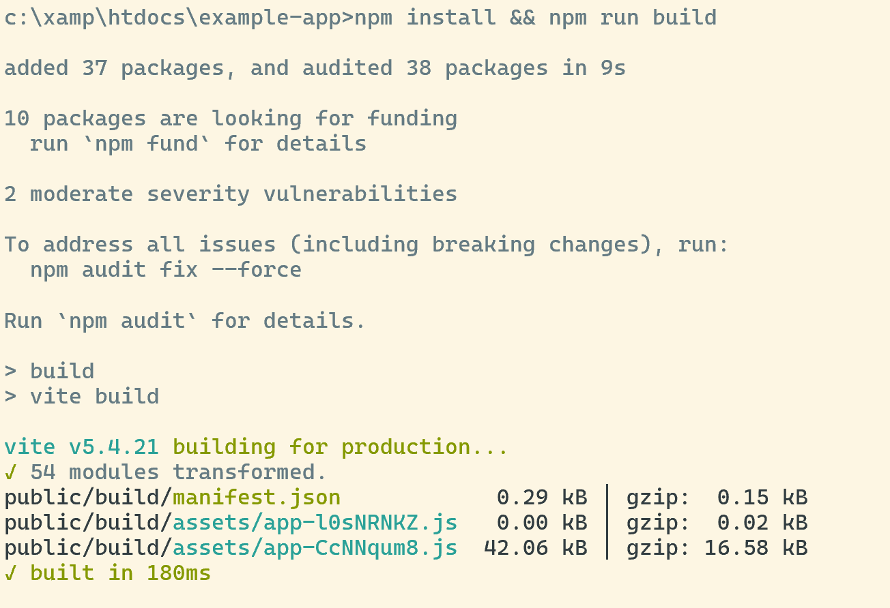
Gambar 3: Proses Unduhan Node Modules Dependensi.
Gunakan utilitas perintah php artisan serve untuk menyalakan akses modul local web server target:
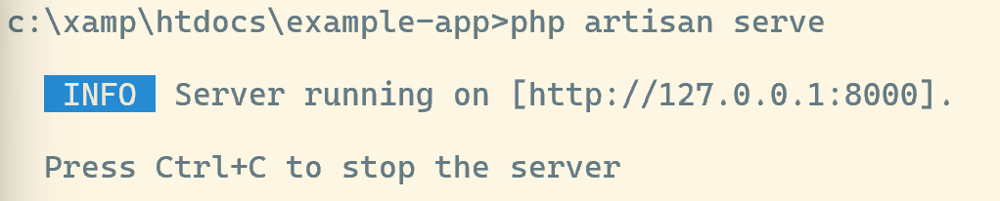
Gambar 4: Menjalankan Server Melalui Artisan Console.
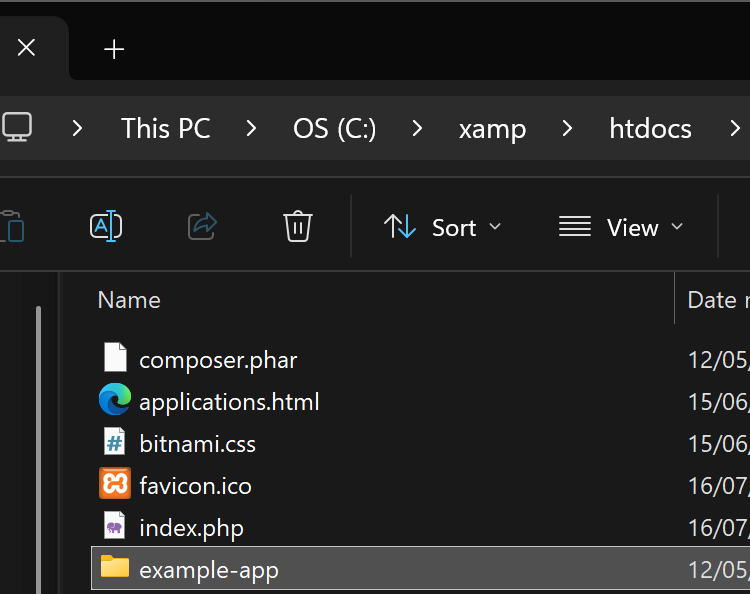
Gambar 5: Landing Page Utama Sistem Framework Default.
Mengenal Struktur Direktori Utama
Berikut merupakan tampilan susunan folder default di dalam sistem utama penunjang kinerja arsitektur framework Laravel:
Gambar 6: Pemetaan Hirarki Penempatan File Project.
IMPLEMENTASI MODIFIKASI DATA ALUR ARSITEKTUR MVC
Membuat File Controller Baru: Membuat modul UserController.php di sub-folder app/Http/Controllers/ dengan struktur fungsi balikan:
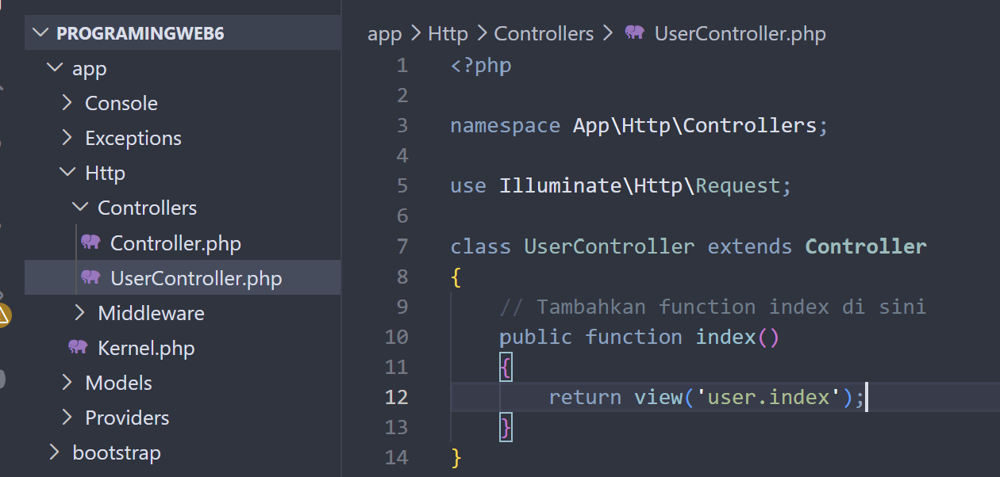
Membuat File Template View Kustom: Menyusun file index.blade.php di sub-direktori path tujuan resources/views/user/:
Mengonfigurasi File Routing web.php: Mendaftarkan parameter url pemicu jalannya sistem web agar bisa diuji coba.
Hasil Pengujian Browser Akhir:
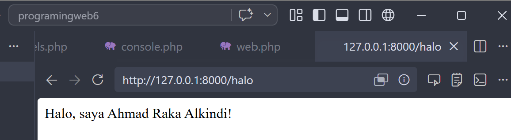
Uji Coba Path Alamat Rute "/halo"
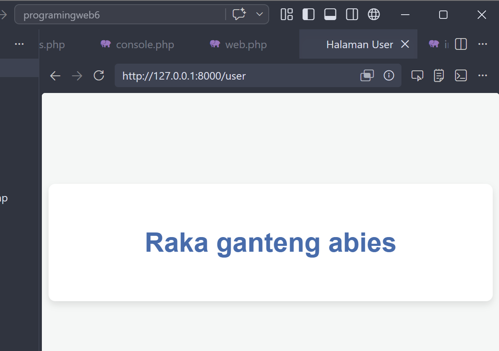
Uji Coba Tampilan Render Alamat Rute "/user"
D. Kesimpulan
Kesimpulan dari praktikum kali ini adalah saya telah berhasil melakukan proses setup dan instalasi framework Laravel di local drive komputer masing-masing, membuat repositori struktur project baru, mengenali susunan folder
fungsional bawaannya, serta memahami jalannya alur arsitektur MVC (Model-View-Controller) secara fundamental. Keberhasilan penyelesaian seluruh rangkaian instruksi ini dibuktikan dengan berfungsinya kustomisasi rute, logic
controller, dan pemanggilan file view target di dalam browser dengan sukses.
Program Studi S1 Informatika Fakultas Teknologi Informasi Universitas Andalas Padang
A. Pendahuluan
Praktikum kali ini berfokus pada integrasi framework Laravel dengan sistem manajemen basis data relasional (MySQL) menggunakan arsitektur MVC (Model-View-Controller). Laravel mempermudah pengelolaan database melalui
fitur-fitur modern yang membuat proses development menjadi lebih terstruktur, aman, dan cepat. Fitur utama yang dipelajari pada praktikum ini meliputi:
a. Database Migration
Version control untuk database yang memungkinkan pembuatan skema tabel lewat kode PHP.
b. Eloquent ORM & Mass Assignment
Pemetaan objek database yang aman menggunakan properti proteksi fillable pada model.
c. Resource Controller
Penyusunan fungsi logika standar CRUD secara otomatis dalam satu modul controller.
d. Route Resource
Pemetaan jalur URL request CRUD yang rapi hanya dengan satu baris kode routing.
B. Tujuan
Tujuan dari praktikum ini adalah agar mahasiswa mampu mengonfigurasi koneksi database pada Laravel, memahami dan mengimplementasikan database migration, mengatur fillable mass assignment pada model, membuat resource
controller untuk menangani logic data, serta membangun aplikasi web CRUD utuh yang responsif menggunakan Bootstrap 5.
C. Isi & Langkah Kerja
Proses pengerjaan praktikum dibagi menjadi dua sub-bagian utama, yaitu penyelesaian Modul Utama (Manajemen Data Produk) sesuai instruksi panduan dasar, serta pengembangan mandiri pada bagian
Latihan (Manajemen Data Mahasiswa). Berikut merupakan dokumentasi dan alur kerja kodenya:
ALUR IMPLEMENTASI CRUD MANAJEMEN PRODUK
Konfigurasi `.env`: Mengatur database tujuan ke variabel DB_DATABASE=programingweb6.
Model & Migration: Membuat blueprint skema tabel database melalui perintah terminal php artisan make:model Product -m.
Mass Assignment: Mengaktifkan properti array protected $fillable di file Model Produk agar data form bisa lolos validasi.
Resource Controller: Menggunakan perintah php artisan make:controller ProductController --resource untuk menghasilkan struktur fungsi CRUD bawaan Laravel.
Dokumentasi Hasil Screenshot Modul Utama:
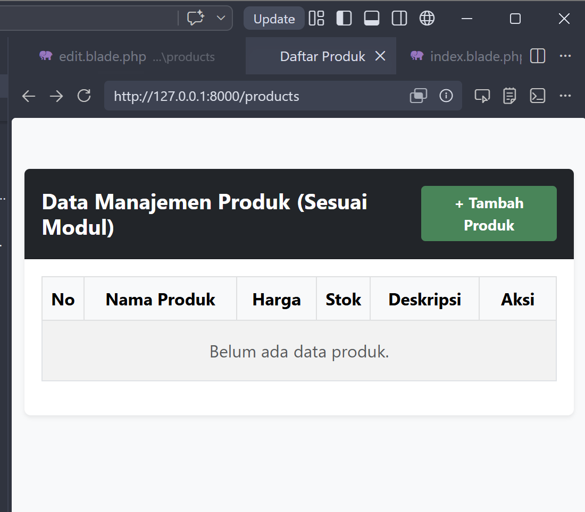
Gambar 1: Interface Awal Halaman CRUD Utama (Kondisi Kosong / No Data)
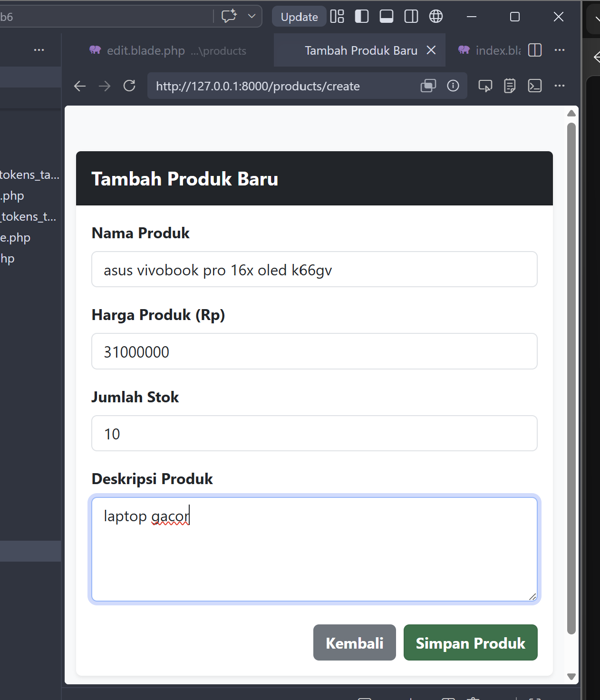
Gambar 2: Form Interface Menambahkan Produk Asus Vivobook
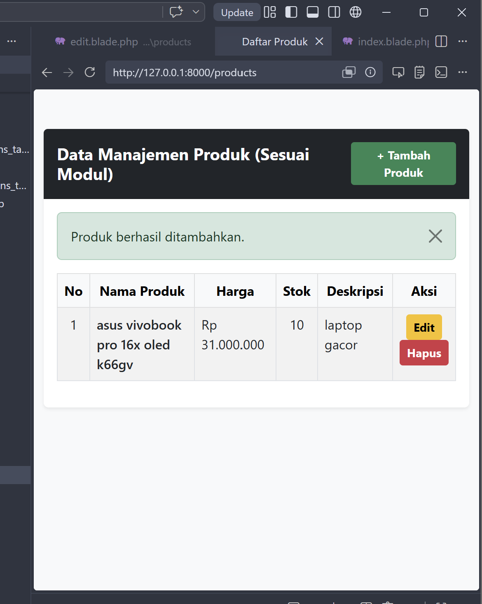
Gambar 3: Data Produk Berhasil Ter-render dan Disimpan ke Database
PENGEMBANGAN MANDIRI: CRUD DATA MAHASISWA
Eksperimen mandiri mereplikasi arsitektur MVC ke entitas data Mahasiswa untuk memvalidasi pemahaman fungsi CRUD terisolasi menggunakan route resource kustom.
Dokumentasi Hasil Screenshot Modul Latihan:
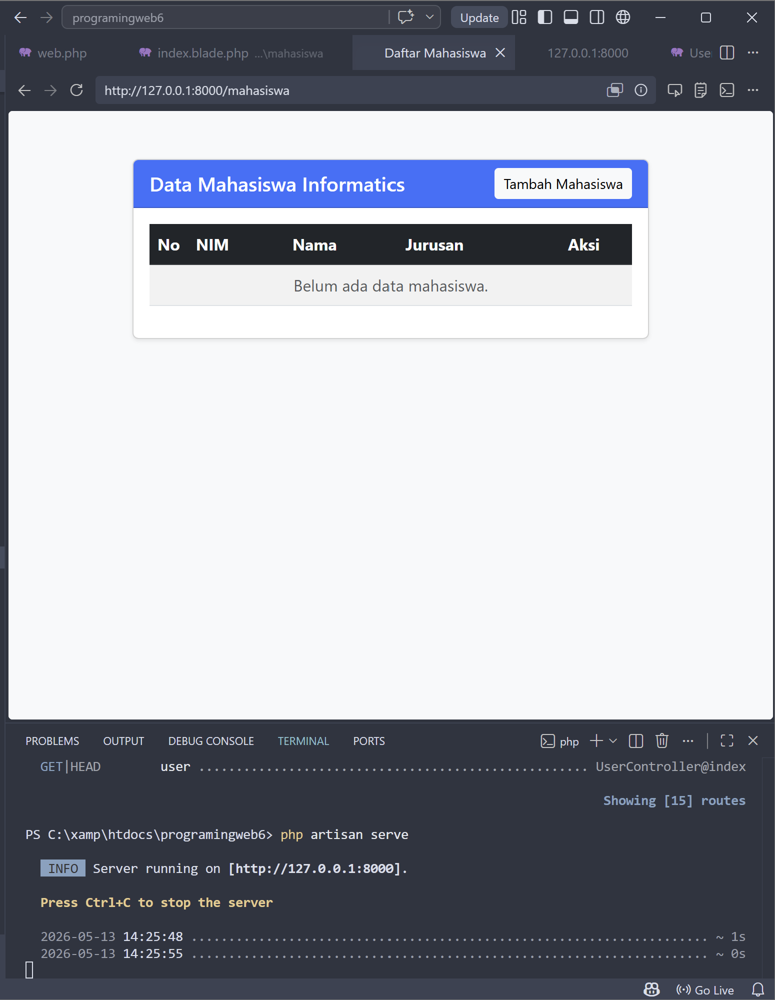
Gambar 4: Tampilan Interface Indeks Modul Mahasiswa (Kondisi Kosong)
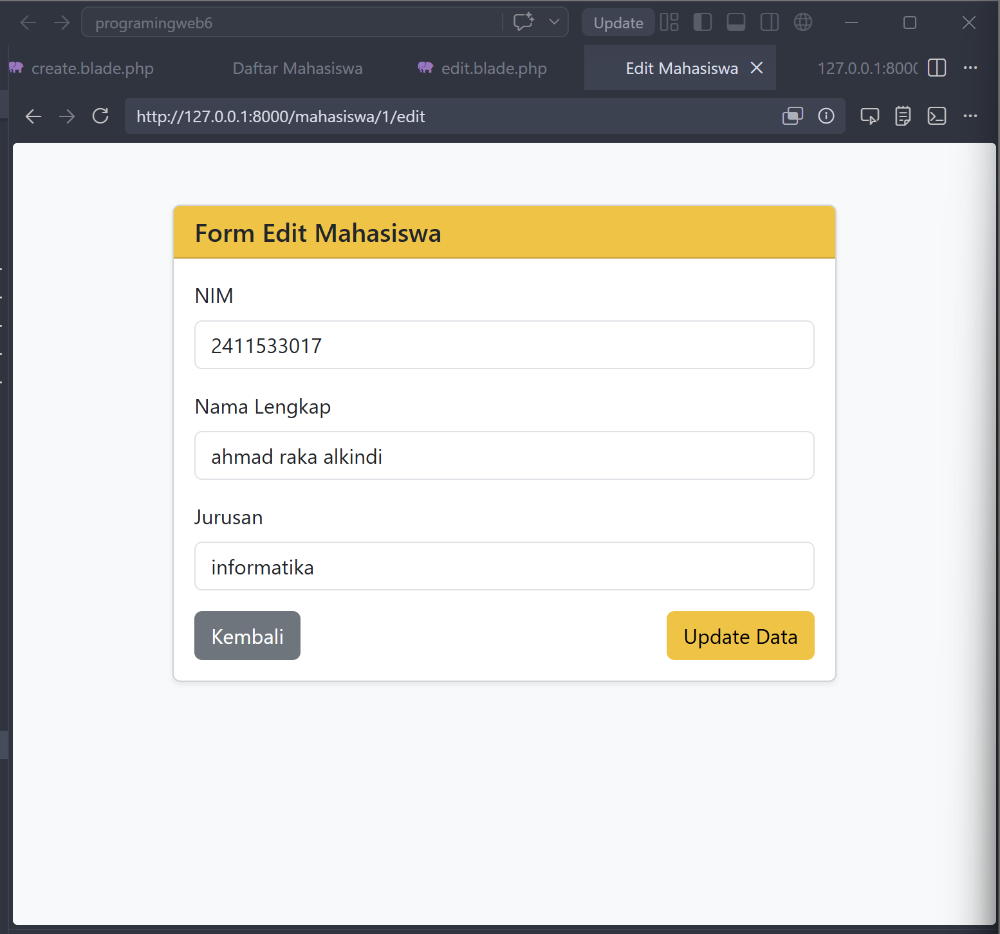
Gambar 5: Fungsionalitas Form Update/Edit Data Mahasiswa Berdasarkan Alamat ID
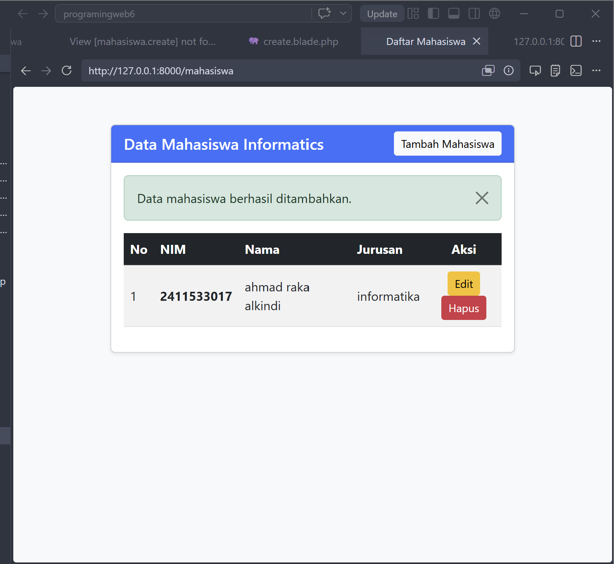
Gambar 6: Data Profil Sukses Ditambahkan ke Grid Tabel Utama
D. Kesimpulan
Kesimpulan dari praktikum kali ini adalah saya telah berhasil memahami dan mengimplementasikan proses koneksi basis data relasional pada framework Laravel, mengelola skema melalui fungsionalitas Migration, serta menerapkan
operasi CRUD (Create, Read, Update, Delete) secara utuh. Melalui pengerjaan dua entitas terpisah, yaitu data Produk (Modul Utama) dan data Mahasiswa (Latihan Mandiri), dibuktikan bahwa arsitektur MVC Laravel mampu memisahkan
logika data backend dan rendering user interface secara modular, aman dari error conflict, serta memiliki sistem proteksi Mass Assignment yang andal.
Detail Dokumen: Laporan Praktikum 8
Laporan Praktikum Pemrograman Web
Laravel Relationship: Student, Major, dan Subject
Oleh:
AHMAD RAKA ALKINDI
NIM. 2411533017
Dosen Pengampu:
NURFIAH, S.ST, M.Kom.
Mata Kuliah:
PEMROGRAMAN WEB
Program Studi S1 Informatika Fakultas Teknologi Informasi Universitas Andalas Padang
A. Pendahuluan
Praktikum ini berfokus pada pemahaman dan implementasi konsep Relationship dalam framework Laravel menggunakan Eloquent ORM. Relationship merupakan fitur inti Laravel yang memungkinkan developer
mendefinisikan dan mengelola hubungan antar tabel database secara elegan langsung dari layer Model, tanpa perlu menulis query SQL JOIN yang kompleks secara manual. Dalam praktikum ini dibangun sebuah sistem akademik
sederhana yang mengelola hubungan antar entitas Student, Major, dan Subject. Jenis relationship yang dipelajari meliputi:
a. One-to-Many (hasMany)
Satu jurusan (Major) memiliki banyak mahasiswa (Student). Diimplementasikan dengan method hasMany() pada model Major.
b. Many-to-One (belongsTo)
Setiap mahasiswa (Student) dimiliki oleh satu jurusan (Major). Diimplementasikan dengan method belongsTo() pada model Student.
c. Many-to-Many (belongsToMany)
Mahasiswa dapat mengambil banyak mata kuliah, dan setiap mata kuliah bisa diambil oleh banyak mahasiswa. Dikelola via tabel pivot student_subject.
d. Eager Loading
Teknik pengambilan data relasi secara efisien menggunakan method with() untuk menghindari masalah N+1 query pada aplikasi.
B. Tujuan
Tujuan dari praktikum ini adalah agar mahasiswa mampu memahami konsep relationship dalam Laravel, mengimplementasikan One-to-Many dan Many-to-Many relationship pada Eloquent Model, membuat migration dengan foreign key dan
tabel pivot, menggunakan Eloquent relationship untuk query data antar tabel, serta menampilkan data beserta relasi-relasinya secara lengkap di dalam view Blade.
C. Isi & Langkah Kerja
Pengerjaan praktikum dibagi menjadi beberapa langkah sistematis mulai dari pembuatan migration, model beserta definisi relationship, seeder untuk data sampel, controller dengan eager loading, routing resource, hingga
tampilan view Blade. Berikut adalah dokumentasi seluruh alur implementasinya:
LANGKAH 1: MEMBUAT MIGRATION
Tahap pertama adalah mendefinisikan skema database melalui file migration. Terdapat empat tabel yang dibuat: majors, students, subjects, dan tabel pivot
student_subject. Tabel students memiliki foreign key major_id yang merujuk ke tabel majors, sementara tabel pivot menyimpan kombinasi unik student_id dan subject_id.
Setelah migration berhasil dijalankan, data seeder diisi dan tampilan awal aplikasi Student Management System dapat diakses di browser.
Gambar 1: Halaman Index — Daftar Mahasiswa Beserta Jurusan, Mata Kuliah Badge, dan Total SKS
Gambar 2: Halaman Detail Mahasiswa — Menampilkan Data Lengkap Beserta SKS Per Mata Kuliah dan Total Beban Studi
Pada tahap ini, tiga model Eloquent dibuat beserta definisi method relationship-nya. Model Major mendefinisikan hasMany(Student::class), model Student mendefinisikan
belongsTo(Major::class) dan belongsToMany(Subject::class), sementara model Subject mendefinisikan belongsToMany(Student::class) untuk relasi balik. Setelah model
dan relationship terdefinisi, operasi CRUD seperti hapus data dan ubah relasi mata kuliah berjalan dengan benar berkat method detach() dan sync().
Gambar 3: Operasi Delete Berhasil — Notifikasi "Student deleted successfully" dan Data Sisa Mahasiswa
Gambar 4: Detail Mahasiswa Setelah Edit — Relasi Mata Kuliah Diperbarui via sync(), Total 11 SKS
Perintah terminal yang dijalankan: php artisan make:model Major php artisan make:model Student php artisan make:model Subject
LANGKAH 3: SEEDER UNTUK DATA SAMPEL
Seeder dibuat untuk mengisi tabel database dengan data sampel awal. MajorSeeder mengisi 4 jurusan, SubjectSeeder mengisi 5 mata kuliah, dan StudentSeeder mengisi 5 data mahasiswa
sekaligus melakukan assignment mata kuliah secara acak via method attach() pada relasi many-to-many. Semua seeder didaftarkan pada DatabaseSeeder dan dijalankan secara berurutan. Setelah
seeder berjalan, form Edit Mahasiswa membuktikan bahwa data relasi dapat dimodifikasi dengan centang mata kuliah yang diinginkan.
Gambar 5: Form Edit Mahasiswa — Input NIM, Nama, Alamat, Dropdown Jurusan, dan Checkbox Mata Kuliah dengan Status Checked Sesuai Relasi Aktif
StudentController dibuat dengan metode CRUD lengkap yang memanfaatkan Eager Loading (Student::with(['major', 'subjects'])->get()) untuk menghindari N+1 query problem. Routing didefinisikan
menggunakan Route::resource('students', StudentController::class) yang otomatis memetakan 7 endpoint RESTful. Selain CRUD utama, dikerjakan pula Latihan Query Relationship yang menampilkan
empat jenis query sekaligus dalam satu halaman: daftar mahasiswa + jurusan + mata kuliah, jurusan dengan mahasiswa terbanyak, mata kuliah mahasiswa tertentu, serta total SKS akumulasi tiap mahasiswa.
Dokumentasi Hasil Screenshot Implementasi:
Gambar 6: Halaman Hasil Latihan & Tugas — Query No.1 (Semua Mahasiswa + Jurusan + Matkul), No.2 (Jurusan Terbanyak), No.3 (Matkul Mahasiswa Tertentu)
Gambar 7: Query No.4 — Tabel Total SKS Akumulasi Setiap Mahasiswa (Nama, Total Matkul, Total SKS)
Gambar 8: Halaman Detail Mahasiswa — Menampilkan SKS Per Mata Kuliah dengan Badge dan Total Beban Studi
Kesimpulan dari praktikum kali ini adalah saya telah berhasil memahami dan mengimplementasikan konsep Relationship pada framework Laravel secara menyeluruh. Melalui pembangunan sistem akademik sederhana
dengan entitas Major, Student, dan Subject, dibuktikan bahwa Eloquent ORM mampu merepresentasikan hubungan antar tabel database (One-to-Many dan Many-to-Many) secara intuitif langsung dari layer Model. Penggunaan teknik
Eager Loading dengan method with() terbukti mampu mengoptimalkan performa query dengan menghindari masalah N+1. Selain itu, operasi pivot table seperti attach(),
sync(), dan detach() pada relasi Many-to-Many memberikan kemudahan pengelolaan data junction yang andal, aman, dan efisien tanpa perlu interaksi langsung dengan tabel pivot di level kode controller.
Website Profile → PWA
Detail pengerjaan proyek mengubah website profil statis menjadi aplikasi web progresif yang mendukung instalasi langsung di smartphone atau desktop.
Aplikasi Pemesanan Perumahan
Sistem informasi managemen data booking dan transaksi perumahan real-estate berbasis desktop Java Swing.
Aplikasi Laundry
Aplikasi pencatatan transaksi kasir, status cucian pelanggan, dan cetak struk nota menggunakan Object-Oriented Programming Java.
Konverter Satuan
Aplikasi utilitas perhitungan konversi konvensional data suhu, panjang, berat, dan volume.


 Gambar 2: Output Kelayakan Berhasil.
Gambar 2: Output Kelayakan Berhasil. Gambar 6: Pemetaan Hirarki Penempatan File Project.
Gambar 6: Pemetaan Hirarki Penempatan File Project.

 Gambar 1: Halaman Index — Daftar Mahasiswa Beserta Jurusan, Mata Kuliah Badge, dan Total SKS
Gambar 1: Halaman Index — Daftar Mahasiswa Beserta Jurusan, Mata Kuliah Badge, dan Total SKS
 Gambar 2: Halaman Detail Mahasiswa — Menampilkan Data Lengkap Beserta SKS Per Mata Kuliah dan Total Beban Studi
Gambar 2: Halaman Detail Mahasiswa — Menampilkan Data Lengkap Beserta SKS Per Mata Kuliah dan Total Beban Studi
 Gambar 3: Operasi Delete Berhasil — Notifikasi "Student deleted successfully" dan Data Sisa Mahasiswa
Gambar 3: Operasi Delete Berhasil — Notifikasi "Student deleted successfully" dan Data Sisa Mahasiswa
 Gambar 4: Detail Mahasiswa Setelah Edit — Relasi Mata Kuliah Diperbarui via
Gambar 4: Detail Mahasiswa Setelah Edit — Relasi Mata Kuliah Diperbarui via  Gambar 5: Form Edit Mahasiswa — Input NIM, Nama, Alamat, Dropdown Jurusan, dan Checkbox Mata Kuliah dengan Status Checked Sesuai Relasi Aktif
Gambar 5: Form Edit Mahasiswa — Input NIM, Nama, Alamat, Dropdown Jurusan, dan Checkbox Mata Kuliah dengan Status Checked Sesuai Relasi Aktif
 Gambar 6: Halaman Hasil Latihan & Tugas — Query No.1 (Semua Mahasiswa + Jurusan + Matkul), No.2 (Jurusan Terbanyak), No.3 (Matkul Mahasiswa Tertentu)
Gambar 6: Halaman Hasil Latihan & Tugas — Query No.1 (Semua Mahasiswa + Jurusan + Matkul), No.2 (Jurusan Terbanyak), No.3 (Matkul Mahasiswa Tertentu)
 Gambar 7: Query No.4 — Tabel Total SKS Akumulasi Setiap Mahasiswa (Nama, Total Matkul, Total SKS)
Gambar 7: Query No.4 — Tabel Total SKS Akumulasi Setiap Mahasiswa (Nama, Total Matkul, Total SKS)
 Gambar 8: Halaman Detail Mahasiswa — Menampilkan SKS Per Mata Kuliah dengan Badge dan Total Beban Studi
Gambar 8: Halaman Detail Mahasiswa — Menampilkan SKS Per Mata Kuliah dengan Badge dan Total Beban Studi